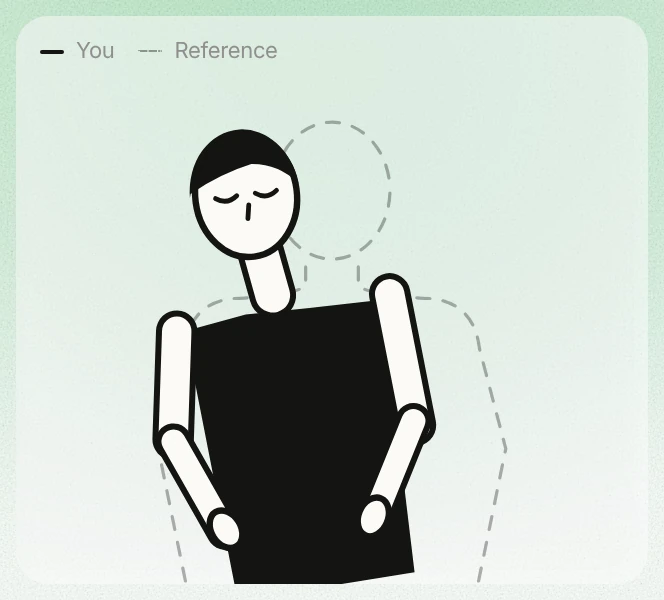
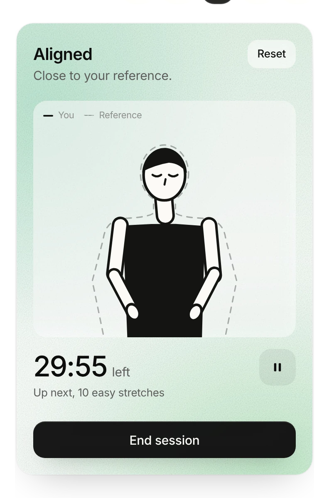
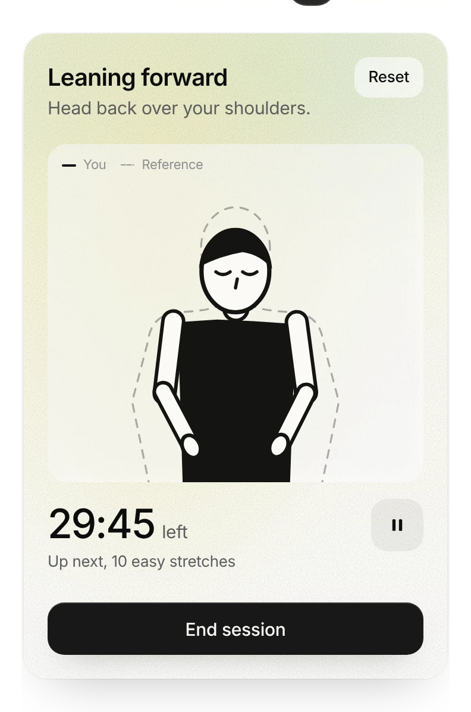
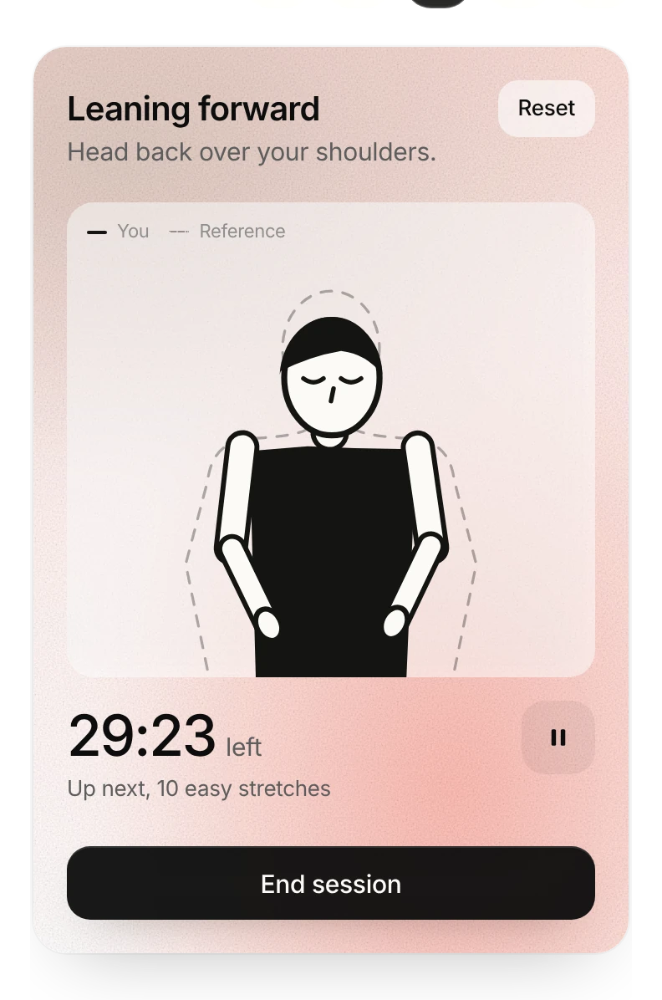
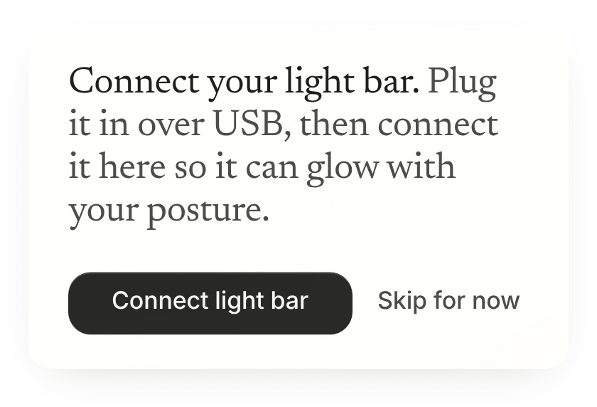
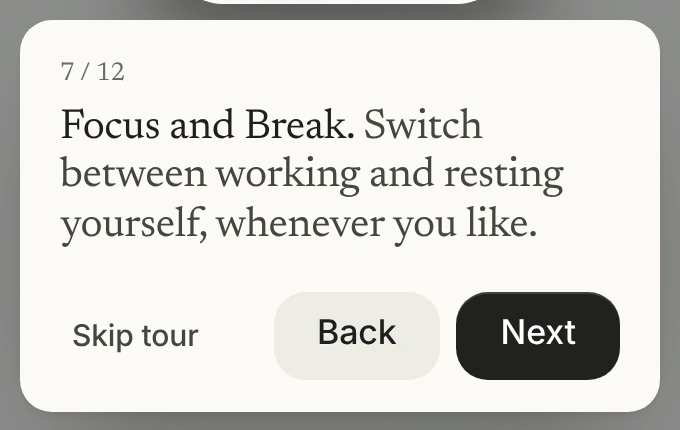
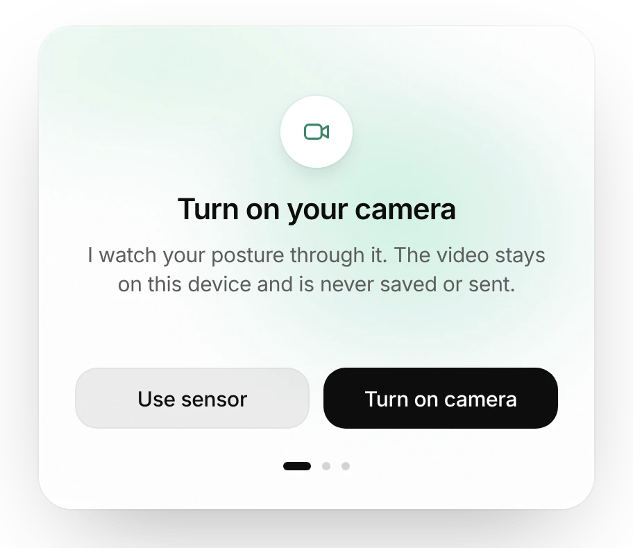
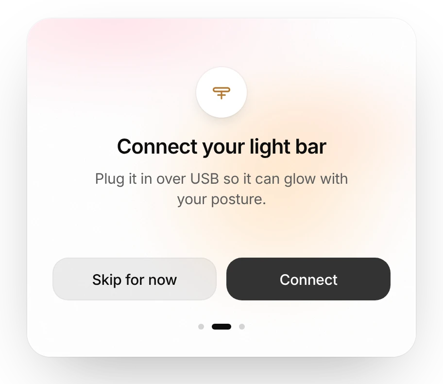
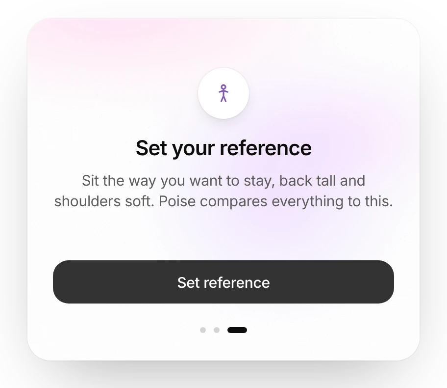
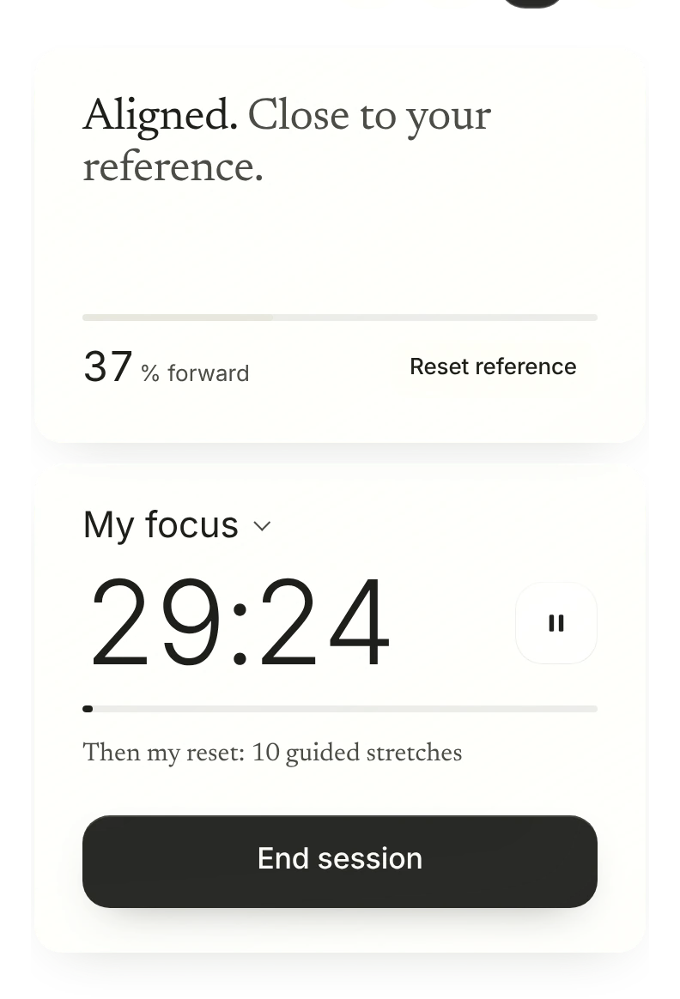

poise
A posture companion
for people who work at a desk
Notice when your posture drifts, without stopping your work.
- Timeline
- 5 weeks, fall 2026
- Role
- Solo designer and builder
- Scope
- Research, UX/UI, hardware
- Context
- SVA Physical Computing
01 · The problem
We drift without noticing.
It happens in the middle of focus
Deep in work we slide closer to the screen. Hours later the neck and back feel it.
“I slide down in my chair and get closer to the screen.”
Designer, interview
Hours later
Head forward, shoulders uneven.

02 · What people told me
I asked how people work. Most only noticed when it hurt.
Noticing late
Barely notice, or notice only when it hurts.
“Sometimes I just realize it, but sometimes if it hurts, that’s how I realize it.”
Engineer, interviewWhere it hurts
Out of 11 people surveyed.
Part two
Then I put it in front of people.
Five problems came back. Each of the next slides fixes one.
03 · Work mode
While you work, the light does the talking.
Aligned
Close to your reference.

Drifting
A change that stays.

Time to reset
Drifted for a while.

A slow fade
Red in one second felt like being scolded, so a change has to last.
Light on the monitor
The bar shows the same colour, so you never look away from your work.
Back to white
Sit back and it returns to calm white within a few seconds.
04 · Fix 2 of 5
One thing at a time.
Before
Two popups at once, then a 12 step tour.


After
Three start cards, one at a time. The card stays put and only its inside changes.



Every extra card is one more reason to skip.
05 · Fix 3 of 5
People didn’t read the number. They read themselves.
Before
A percent shift nobody could read.

Aligned
Close to your reference.
A chart first
A live graph was still hard to read at a glance.
Then a figure
It follows you, so you see which way you lean.
Your outline
The gap to the dashed outline says more than any number.